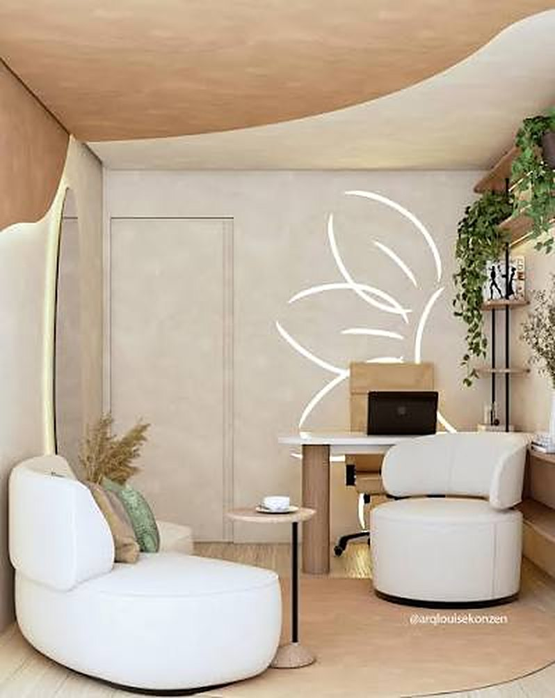
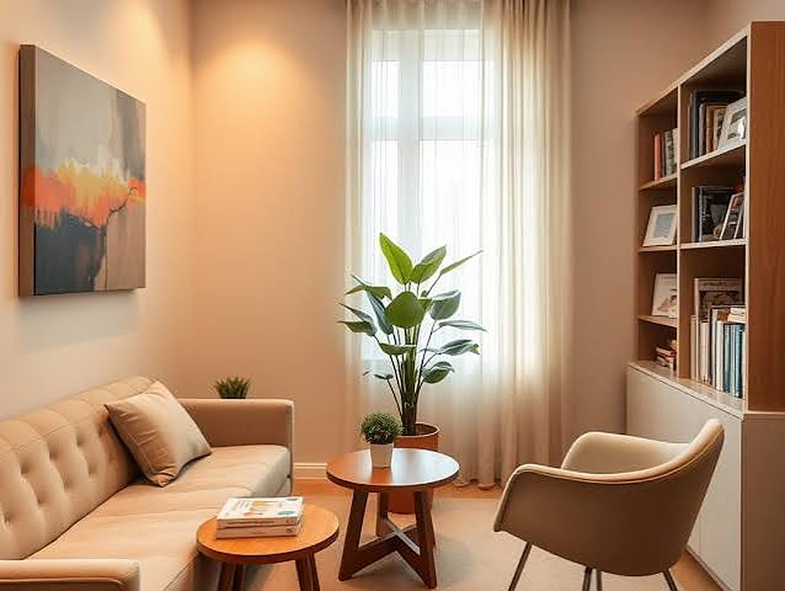

Psicólogo Dr. Jarismar do Nascimento Melo · CRP 17/9529
Um espaço de escuta para o que ainda não encontrou palavras.
Atendimento clínico para adultos — com sigilo, ritmo próprio e presença.
Escuta clínica, sem pressa de concluir você.

O que pode ser trazido
Você não precisa chegar com um motivo bem definido. Muitas vezes, o que leva alguém à terapia ainda não tem forma.
- A ansiedade que não cede
- O vazio
- Os vínculos que se repetem
- A perda
- A transição que ainda não tem nome
Psicólogo Jarismar do Nascimento Melo
- Registro
- CRP 17/9529
- Área
- Psicologia clínica
- Público
- Adultos
Sou psicólogo e atuo em psicologia clínica. Meu trabalho é oferecer um lugar estável para o que você vive — a ansiedade que não cede, o vazio, os vínculos que se repetem, a perda, a transição que ainda não tem nome.
Não trago fórmulas prontas. A conversa é o instrumento: você fala, eu escuto com atenção e devolvo o que percebo, para que você possa se reconhecer com mais clareza e escolher, com mais liberdade, o que fazer com isso.
O setting é confidencial. O ritmo é o seu. O compromisso é ético: presença, respeito e cuidado com a singularidade de cada história.

Um ambiente acolhedor, reservado e silencioso, pensado para que você possa falar sem pressa.
O processo
Três passos. Nenhum atalho.
A psicoterapia não é um produto. É um trabalho contínuo, feito a duas vozes, no tempo que a sua história pede.
-
Primeira conversa
Você conta o que o trouxe até aqui, do jeito que conseguir. Eu escuto e, juntos, combinamos como o trabalho pode acontecer: frequência, horários e o que esperar do atendimento.
-
O percurso
As sessões seguem o ritmo da sua história. A conversa é o instrumento: você fala, eu escuto e devolvo o que percebo, para que o que era confuso comece a ganhar nome.
-
A elaboração
Com o tempo, ficam mais claros os caminhos e as escolhas possíveis. O encerramento também é conversado, a duas vozes, quando a sua história indicar.
Dúvidas frequentes
Como é a primeira conversa?
É um encontro para você contar o que o trouxe até aqui, no seu ritmo. Juntos, combinamos como o trabalho pode acontecer: frequência, horários e o que esperar do atendimento.
O que é dito em sessão fica em sigilo?
Sim. O sigilo é um dever ético do psicólogo, regulado pelo Código de Ética Profissional do Psicólogo.
Quanto tempo dura a psicoterapia?
Não há prazo fixo. O processo segue o tempo que a sua história pede e o encerramento também é conversado entre nós.
Como agendo e quais são os valores?
Basta enviar uma mensagem pelo WhatsApp (84) 98147-4327 ou pelo formulário desta página. Horários e valores são combinados diretamente no primeiro contato.
Primeiro contato
Escreva em poucas palavras como posso ajudar. Retorno para combinarmos a primeira conversa.
Enviar mensagem
Contato direto
Psicólogo Jarismar do Nascimento Melo
CRP 17/9529 · Psicologia Clínica
Atendimento clínico para adultos, com horários combinados no primeiro contato.